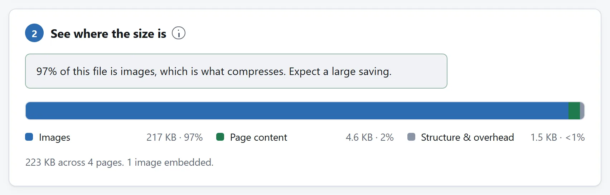
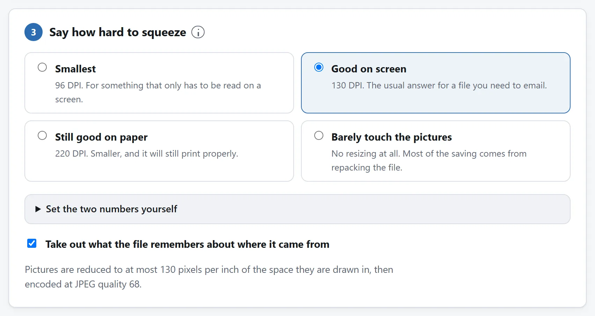

先说结论
打开 PDF 压缩，把文档丢进去，先别改任何东西，看它告诉你什么。它会把文件读一遍，摆明体积到底压在哪儿：图片、字体、文字和图形，还有那些文档里已经没人引用的东西。这一屏通常就把问题回答了。
体积大半是图片，那就能省下一大块。要是大半是字体和文字，那就省不下来，谁也省不下来。你手上是哪一种，这就是全部故事，值得花十秒看一眼。
符合提交限额，保住重要细节
申请门户或邮件先查实际限额，保留 PDF 原件。屏幕阅读先试“屏幕上清楚”130 DPI，打印重要时试“纸上也清楚”220 DPI。压缩后对照实际大小，打开下载件看小字、编号和签名。仍太大就降低一档分辨率或 JPEG 质量，从原件重新导出。工具没有自动目标大小设置。
图片多的报告另做阅读副本更便于分发，原件留作打印。清单主要是文字或被跳过的图像格式时，强设置收效可能很小。只要指定页就先提取这些页；拆分只有对方接受多文件时有用。
一份 PDF 的体积到底压在哪儿
PDF 是个容器，里面装着好几类东西，而它们的可压缩程度完全不同。
- 图片。照片和扫描件。一份大 PDF 里，它几乎总是大头，也是唯一真有余地的部分。
- 内嵌字体。一整套字体能有几百 KB；只取实际用到的那些字符，就少得多。不管哪种，做这个文件的软件早就压过它们了。
- 文字和矢量图形。是指令，不是像素：画这条线、把这个词摆在这儿。它们本来就紧凑，也本来就压过了。
- 已经没人指向的对象。PDF 很会攒这种东西。编辑一份文档，往往是把改动追加在后面，而不是把文件重写一遍，所以某一页的旧版本可以一直躺在里面。重新打包文件就会把它们丢掉。
所以，拿到 PDF 压缩工具跟前的那两种文档，前景完全不同。扫描件本质上就是一摞照片，通常能小 60% 到 90%。而合同、论文或者导出的报告是文字、图形和字体，全都被写它的那个软件压过一轮了，这种一般只能省下百分之几，来源是重新打包、以及丢掉没人引用的东西。
凡是连你的文件都没看就承诺“最高可减 90%”的工具，都是拿第一种的最好情况，去说第二种。

DPI 跟这事有什么关系
PDF 里存的不只是一张图，还记着这张图在页面上画多大。这就给了你一个比像素数更有用的东西：有效分辨率。
一张 4000 像素宽的扫描图，铺在八英寸宽的纸上，等于每英寸 500 个像素。屏幕能显示的大约是 100。一台不错的办公打印机工作在 300，再多也用不上。超出这个数的全是细节，而这份文档将来的任何一种用法都显示不出来，偏偏它往往就是文件的大头。
所以一个明白事理的 PDF 压缩工具，问你要的是 DPI，不是一个质量百分比。它先把超过你那个数字的像素扔掉，因为那些像素换来的东西谁也看不见，然后才开始动真正的画质。
粗略的参考：只在屏幕上读的文档用 150 DPI，要打印的用 200 到 300，谁也不会留着的草稿用 72 到 100。按图片实际画多大来衡量，也正是为什么一个放得很小的 logo 不会跟整页扫描件被同等对待，它本来就已经贴着自己的有效分辨率了，没什么可拿的。

压缩该动什么，不该动什么
图片要重新编码，所以那部分会掉一点。除此之外什么都不该动，而你手上那个工具守不守这条，值得核一核：
- 文字还是文字。选得中、搜得到、复制得走。一个把页面压平成图片的压缩工具，能给你一个非常小的文件，也顺手毁了这份文档：搜不了，读屏软件读不了，而且再也回不去了。
- 字体保持完整。替换字体会改变这份文档在别人机器上的样子，而 PDF 存在的意义，恰恰就是防止这件事。
- 矢量图形原样复制。它本来就小，把它光栅化只会又变大又变差。
- 表单、链接、书签、无障碍结构和附件都要带过去。这些在重写过程中很容易丢，而且往往要等到有人需要它的那天才被发现。
还有一条相关的规矩，压缩工具该守，而很多没守：一张图重编之后要是并不比原来小，那就把原来的字节放回去。白白把画面弄差、又一点没省，那是纯亏，而在那些本来就压得不错的图片上，这种事发生得比你想的多。
压不动的那些图片
PDF 里有些图片会被跳过，而好一点的工具会把它们点出来，不会一声不吭地把它们排除在账目之外：
- JPEG 2000、JBIG2 和传真编码（CCITT）图片。没有哪个浏览器自带这三种的解码器，所以原样放行。后两种是双色的，只有黑白，一般也本来就接近最小了。
- CMYK 图片。故意不动。重编有可能让印出来的颜色偏掉，而对一份别人要拿去打印的文档做这种事，未免太意外了。
动手压之前，先试试这几招
有时候文件之所以大，理由本身就说明压缩是个错误答案。
它是不是本来不用扫的？一份打印出来又扫回去的文档，就是一摞文字的照片。原件要是还以文档的形式存在某处，把那个导成 PDF，出来的文件会小上一大截，而且还能搜。
它是不是按印刷设置导出的？文字处理和设计软件常常默认导出印刷质量。从源文件按屏幕用途重导一次，通常比压缩那份导出结果更划算。
它非得是一个文件不可吗？邮件的上限是按每封算的。把一份两百页的文档按章拆开，有时候才是老实的办法。
加密的文件，以及压缩工具为什么该拒收
带密码的 PDF 会被这里的工具拒收，这是故意的，不是缺功能。连密码是空的那种也拒，而很多扫描仪和复印机就是这么存的。
给文档解保护跟给文档瘦身是两码事。一个一声不吭就办了的工具，等于替你做了你没要求的事，动的是别人有意锁上的文件，还回给你一份不再具有他们本来想要的那个属性的副本。你真想解，那就先自己动手、有意识地解掉。
检查结果
打开它。把图片放到全尺寸看看，确认文字还选得中，再核对一遍页数。
最后这件事，这里的工具在把文件交给你之前就替你做了：它把刚写好的文档重新打开一遍，把页数点一遍，在你自己的机器上。它还按 PDF 1.5 写，2003 年之后出的阅读器都认，所以“在我机器上打得开”基本可以代表“在他们那儿也打得开”。
为什么这件事不需要服务器
压缩 PDF 听着像服务器的活，在网页存在的大半时间里也确实是。可它实际做的事，无非是解析文件结构、找到那些图像流、用浏览器本来就带的编解码器把它们解开再编回去，然后把文档写出来。这些现在都能在浏览器里跑。
而这件事在这类文件上比在别的上更要紧，因为人们拿来压的是什么：合同、诊断报告、银行流水、身份证件、报税材料。这里的工具压根没有联网功能，页面的 Content-Security-Policy 把它可能联的地址全列了出来，没有一个是本站的。打开它，拔线，照压不误。
把文件传给在线转换器安全吗？里还有另外三个同类检查。